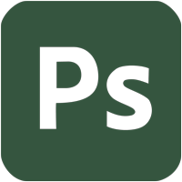
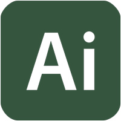
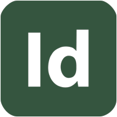

MY SKILLS

Photoshop

Illustrator

InDesign
3D Design
Ceramics
Photography
"Hi! My name is Arianne Mina but I prefer to be called Ari. I am a Multimedia/ Graphic arts major at San Diego State University hoping to graduate by 2025. I’m a San Diego native and enjoy all things art related. My hobbies include film photography, video games, embroidery, rug making, pop punk music, and coffee."
Photoshop
Illustrator
InDesign
3D Design
Ceramics
Photography
I intended to graduate this May 2025!
After graduating I am looking for jobs within my field such as applying to a multimedia firm in San Diego called Doctor Multimedia. I also intend to explore my options outside of my field such as applying to the Sony video game department.
My favorite class while attending SDSU was an expressive typography class I took as an elective. My Professor Yomar Agusto was a very expressive person and very passionate about the art of typography. I enjoyed learning calligraphy and being able to craft my own font from paper to screen.
What I am most proud of is pushing through my degree despite many set backs. During my fall 2024 semester I encountered a professor who blatantly told me I would fail the class the second week into the semester. Having an anxiety disorder, and multiple mental health issues, I wanted to drop out many times with that instance being a very big deterrent to any motivation I held at the time. Luckily I was able to push through the darkness and hope to finish school by this year.